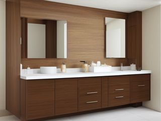
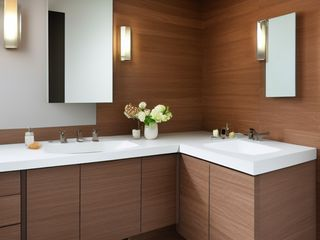
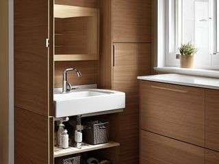
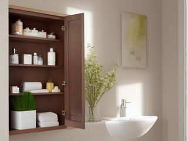
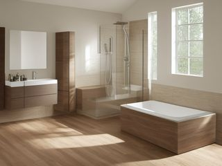
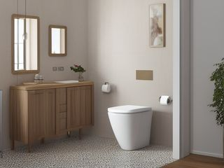
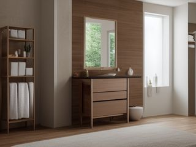

Room
Primary Bathroom: the smallest room you use the most, starting at the counter
The primary bathroom is the smallest room you use the most, and it carries three problems no other room has all at once: standing moisture, open chemistry, and dates that quietly pass while you sleep. Start at the vanity counter, because it is the surface you look at twice a day, and clearing it changes what the room looks like from the doorway. Everything else in here gets easier once the counter wipes clean in one pass.
Also called the master bathroom. Same room, same micro zones.
The 7 micro zones
A micro zone is one session, not a whole day. Finish one before you start the next.
Added together, the 7 sessions below come to about 4.5 to 7 hours for the whole primary bathroom. That is not one long day. Each session finishes on its own, so stopping after the first still leaves the room better than it was.
Start here. Counter first, shower second. Those two are what you stand in front of every morning, and finishing them makes the under-sink cabinet worth opening. Leave the medicine cabinet for a session where you are willing to read small print on the back of a box.
The micro zones of this room
Primary Bathroom
7 zones. Finish one before you start the next.
- 1The Vanity Counter30-45 min
- 2The Vanity Drawers45-75 min
- 3The Under-Sink Cabinet60-90 min
- 4The Medicine Cabinet45-75 min
- 5The Shower or Tub30-45 min
- 6The Toilet Area15-30 min
- 7The Linen and Towel Storage30-45 min

The Vanity Counter (30-45 min)
To hold the handful of things you touch every morning and every night, and nothing else.
The Vanity Drawers (45-75 min)
To hold the grooming tools and products you actually reach for, arranged by when in the day you use them.
The Under-Sink Cabinet (60-90 min)
To store cleaning supplies and backstock around the plumbing without ever hiding a leak.
The Medicine Cabinet (45-75 min)
To hold the medicine and first aid you would need tonight, and nothing you stopped needing years ago.
The Shower or Tub (30-45 min)
To keep only the products actually in use within reach, on surfaces that dry out between showers.
The Toilet Area (15-30 min)
To keep the smallest and dirtiest patch of the room clean and stocked without letting it contaminate anything else.
The Linen and Towel Storage (30-45 min)
To hold enough clean towels for the way this house actually does laundry, and no more than the shelf can safely carry.
Illustrations of each zone finished. Not photographs of real homes.
The kit for the whole primary bathroom
Every zone below draws from this. These are types of thing, not brands, and anything you already own that does the job is the right one to use. Each zone page names the smaller list that zone actually needs.
- Bathroom grime and soap-film cleaner Clean tubs, showers, sinks, and tile, in the Shine pass. Never mix cleaners; verify stone compatibility.
- Color-coded microfiber cloth set ×12 Wipe, dust, and dry surfaces, in the Shine pass. Wash by use color; avoid fabric softener.
- Neutral pH multi-surface cleaner Routine cleaning of sealed surfaces, in the Shine and Sustain passes. Verify surface compatibility; lock around children and pets.
- Compact vacuum with attachments Remove dust, crumbs, and debris, in the Shine pass. Use appropriate attachment.
- Keep, Relocate, Donate, Recycle, Trash container set ×5 Support rapid item routing during Sort, in the Sort pass. Do not block exits.
- Portable cleaning caddy Transport and contain cleaning inputs, in the Straighten, Shine and Sustain passes. Secure chemicals from children and pets.
- Portable label maker Create durable standardized labels, in the Standardize and Sustain passes. Follow surface and adhesive guidance.
- Removable write-on labels Create temporary or adjustable visual controls, in the Standardize pass. Test on delicate finishes.
For this room
- Cleaning note. Spray the tub and shower walls before you touch anything else, then work the counter and the toilet while the cleaner sits. Chemistry needs time, not scrubbing. Squeegee the glass last and leave the fan running after you walk out.
- The trap. Treating an expired thing as stock. A separated sunscreen, a crumbling tablet, a mascara from two summers ago: these are not supplies you are saving, they are failures already sitting on your shelf. Read dates on every Sort pass in here, and take medicines to a pharmacy take-back rather than the toilet.
The primary bathroom deck
The same zones as a deck of 76 cards you can read here or print: what each zone is for, the frictions people actually report in it, the root cause behind each one, and the timed action that clears it. Free, no account. Read the primary bathroom deck.
When you want it off the screen
The whole Primary Bathroom on cards you can carry
Everything above is free and stays free. The Primary Bathroom Pack puts these 7 micro zones on 42 printable cards, nine to a page, plus the standards sheet for the room. It is for the part where you are stood in here with wet hands and would rather not be holding a phone.
The Primary Bathroom Pack, 9 dollarsOr all twenty rooms, 19 dollarsOr draw a card free
The Primary Bathroom on its own is 9 dollars for 42 cards. All 114 micro zones is 19 dollars for 684, which is more cards for the money by a wide margin. The room pack is here because you came for the primary bathroom, not for the house.
Or have somebody run it with you. A one hour virtual consult is 250 dollars: we work out what the primary bathroom is supposed to do, what is stopping it and which zone to start on, and you keep a written plan.
See what a consult covers, 250 dollars
Not ready to pay for that either? Ask which zone first, free
The other rooms
The same six passes, room by room. Every one of these is broken into its own micro zones.
All 20 rooms and 114 micro zones on one page